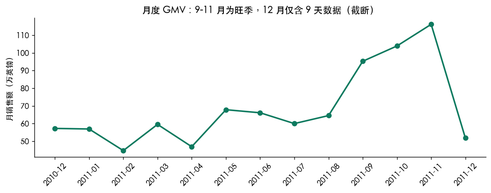
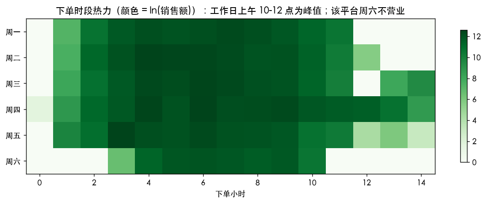
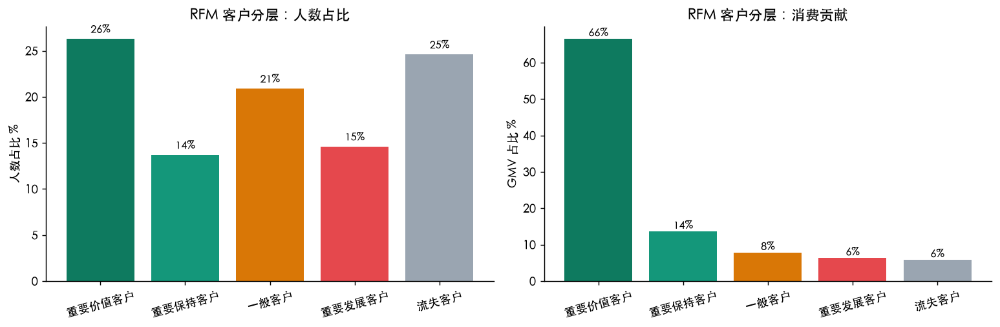
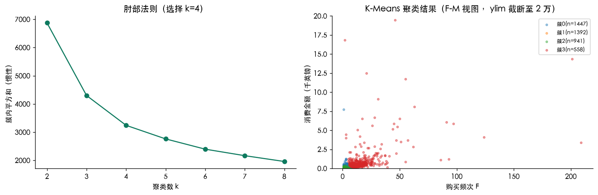
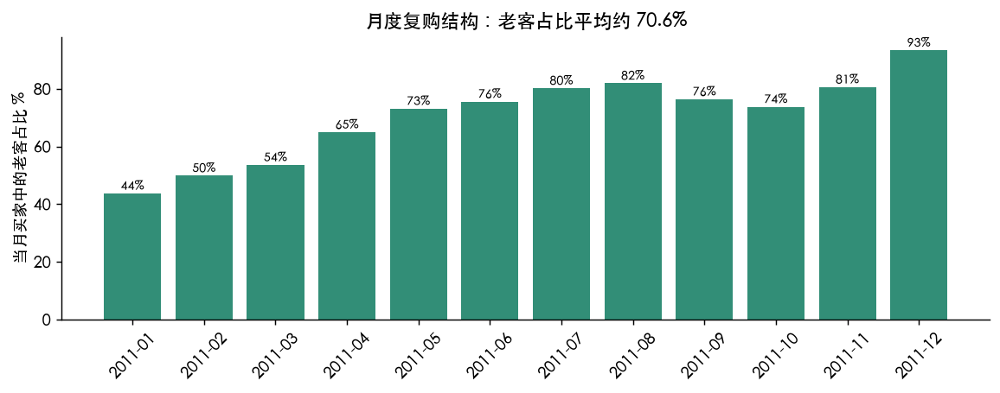
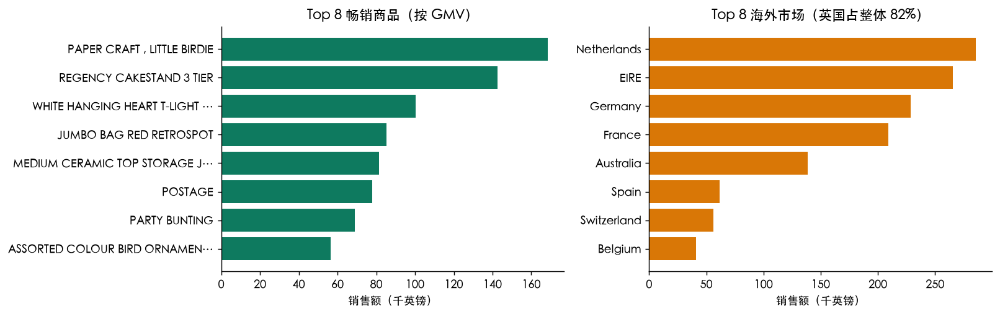
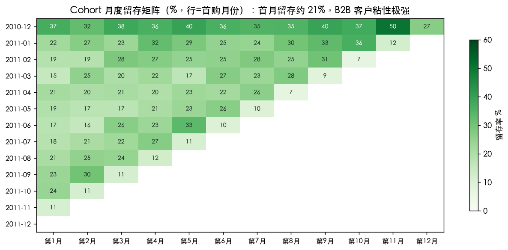
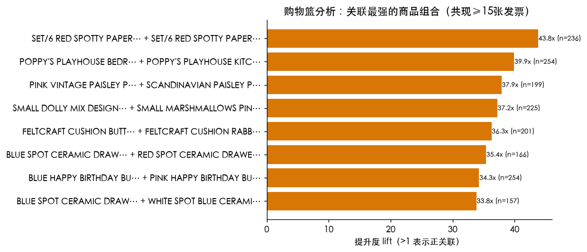

1 · 业务问题与数据
电商运营的核心问题：谁是最有价值的客户？他们在什么时间买？谁正在流失？本项目使用 UCI 公开数据集（541,909 行交易记录、4,338 名客户、3,665 个商品、38 个国家）。
流程：数据清洗KPI 总览时段规律RFM 分层K-Means 聚类复购留存退货分析
清洗动作：退货/取消单（负数量与 C 开头发票，1.96% 行）单独分析不入销售口径；单价 ≤ 0 的调整行剔除；CustomerID 缺失的 24.9% 订单（游客/批量单）不参与客户级分析——这一步让 RFM 的样本口径清晰可解释。
2 · 经营节奏：月度趋势与下单时段


图1 · 月度 GMV；图2 · 星期 × 小时下单热力
结论：① 峰值月在 2011-11（圣诞备货季），9-11 月持续走旺；② 下单集中发生在工作日上午 10-12 点——这是 B2B 客户在办公时间采购的典型特征；③ 该平台周六不营业，周日单量极少，运营排期与客服排班应据此对齐。
3 · RFM 分层：谁在贡献 GMV

图3 · RFM 客户分层（R/F/M 各按五分位打分，映射为业务分层）
| 分层 | 人数占比 | GMV 占比 | 人均消费 | 人均订单 |
|---|---|---|---|---|
| 重要价值客户 | 26.3% | 66.5% | £5,204 | 10.0 |
| 重要保持客户 | 13.7% | 13.6% | £2,029 | 5.3 |
| 一般客户 | 20.9% | 7.8% | £767 | 1.9 |
| 重要发展客户 | 14.6% | 6.3% | £886 | 1.8 |
| 流失客户 | 24.6% | 5.8% | £488 | 1.1 |
结论：「重要价值客户」以 26.3% 的人数贡献了 66.5% 的 GMV——显著的二八效应；而「流失客户」占 24.6% 人数却只贡献 5.8%。运营含义：资源应向价值客户的留存与流失客户的召回两端集中，中间层的维护优先级最低。
4 · K-Means 聚类：数据驱动的分群验证

图4 · 肘部法则选 k=4；右图为 F-M 视图的聚类结果（对 R、logF、logM 标准化后聚类）
| 簇 | 人数 | 平均 R | 平均 F | 平均 M |
|---|---|---|---|---|
| 簇 0 | 1,447 | 45 天 | 4.3 次 | £1,668 |
| 簇 1 | 1,392 | 58 天 | 1.5 次 | £393 |
| 簇 2 | 941 | 259 天 | 1.4 次 | £390 |
| 簇 3 | 558 | 20 天 | 16.0 次 | £10,008 |
结论：无监督聚类独立于 RFM 规则，也分离出了「高频高额核心客群（F≈16、M≈£10,000）」与「高 R 低频流失客群（R≈259 天）」，与 RFM 分层相互印证。两套方法的交叉一致性，说明分层结论不是打分规则的人为产物。
5 · 复购结构与热门商品


图5 · 月度老客占比；图6 · Top 畅销商品与海外市场
结论：① 月均 70.6% 的当月买家是老客——这是 B2B 批发（复购驱动）而非 C 端零售（拉新驱动）的结构性证据，营销预算应偏向留存与客单提升；② 英国本土贡献 82.0% GMV，海外市场（荷兰、爱尔兰等）是第二增长曲线；③ 退货/取消占行数 1.96%、占金额约 6.42%，属正常区间。
| # | Top 畅销商品 | GMV |
|---|---|---|
| 1 | PAPER CRAFT , LITTLE BIRDIE | £168,470 |
| 2 | REGENCY CAKESTAND 3 TIER | £142,593 |
| 3 | WHITE HANGING HEART T-LIGHT HOLDER | £100,448 |
| 4 | JUMBO BAG RED RETROSPOT | £85,221 |
| 5 | MEDIUM CERAMIC TOP STORAGE JAR | £81,417 |
6 · Cohort 留存矩阵与购物篮关联

Cohort 留存：按首购月份分组的月度留存矩阵显示，首月留存平均约 20.6%——B2B 客户一旦建立采购关系，粘性极强且长期稳定，这与「老客占比 70.6%」互相印证。运营含义：新客首月的转化动作（首单优惠、客服跟进）是全生命周期价值的关键杠杆。

购物篮分析：在 365 个高频商品（≥275 张发票）中两两计算共现提升度（lift），展示关联最强的组合。lift > 1 表示两商品被同时采购的频率显著高于随机——B2B 场景下通常是「成套采购」模式，可用于组合定价与捆绑推荐；同时这类共现关系也是缺货预警的输入（A 缺货会连带 B 的订单）。
| 商品 A | 商品 B | 共现发票数 | lift |
|---|---|---|---|
| SET/6 RED SPOTTY PAPER CUPS | SET/6 RED SPOTTY PAPER PLATES | 236 | 43.8x |
| POPPY'S PLAYHOUSE BEDROOM | POPPY'S PLAYHOUSE KITCHEN | 254 | 39.9x |
| PINK VINTAGE PAISLEY PICNIC BAG | SCANDINAVIAN PAISLEY PICNIC BAG | 199 | 37.9x |
| SMALL DOLLY MIX DESIGN ORANGE BOWL | SMALL MARSHMALLOWS PINK BOWL | 225 | 37.2x |
| FELTCRAFT CUSHION BUTTERFLY | FELTCRAFT CUSHION RABBIT | 201 | 36.3x |
| BLUE SPOT CERAMIC DRAWER KNOB | RED SPOT CERAMIC DRAWER KNOB | 166 | 35.4x |
7 · 分析局限（诚实声明）
- CustomerID 缺失的 24.9% 订单未纳入客户级分析，RFM 口径为「可识别客户」，总 GMV 会略低于全量口径。
- 该数据集为 B2B 批发场景，结论（如复购率 70%）不可直接外推到 C 端电商。
- 数据无购物车/浏览事件，无法做「浏览→加购→购买」漏斗分析；RFM 的 R 以数据集末尾为基准，非真实"今天"。
- 2011-12 只含 9 天数据，月度趋势图已标注截断，不参与环比判断。
- 可改进方向：引入 Basket 级购物篮分析（关联规则）、对流失客户做召回 A/B 实验、用生存分析建模客户生命周期。